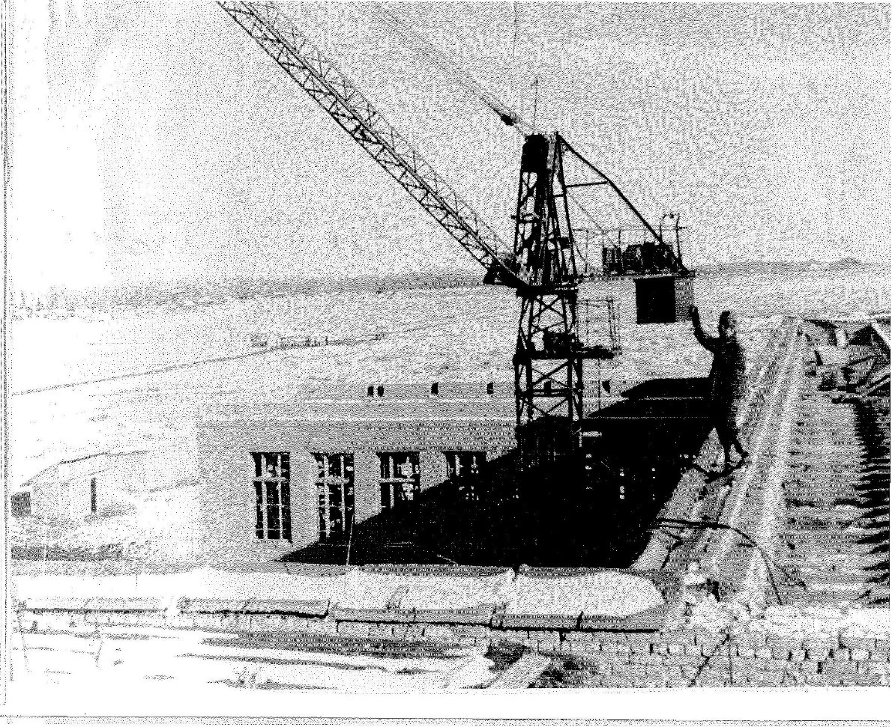

В далёком 1962 году в течение полугода коллектив учителей и старшеклассников бывшей школы № 9 во главе с директором Василием Фёдоровичем Клюшиным после занятий помогали строителям быстрее «навести глянец» школе-новостройке в восточном микрорайоне города...
СмотретьВ далёком 1962 году в течение полугода коллектив учителей и старшеклассников бывшей школы № 9 во главе с директором Василием Фёдоровичем Клюшиным после занятий помогали строителям быстрее «навести глянец» школе-новостройке в восточном микрорайоне города.
И 25 сентября 1962 года в школе №11города Кызыла впервые заливисто прозвучал звонок, и дети шумно заполнили классы, ещё пахнущие стружкой, известью и краской. Так в большую семью школ нашей огромной Родины вступила родная одиннадцатая школа, строительство которой началось тремя годами ранее, в 1959 году.
Строительство здания школы на начальном периоде осуществляла бригада Монгуша Очур-оола, с 1960 года бригаду строителей возглавил Ершов Николай. Отделкой занимались рабочие под руководством Геращенко Владимира Ильича и выше упоминавшийся директор, учителя, старшеклассники девятой школы. Процесс строительства протекал в тяжёлых условиях летнего зноя и зимних морозов. Старожилы вспоминают, что приходилось рыть траншеи, класть кирпич даже в 50 - е морозы. Для того, чтобы завершить строительство к началу учебного года, строителям приходилось работать по ночам, в две смены и даже в воскресные дни. Работа велась активно, объект необходимо было сдать к началу нового учебного года, поэтому. Только благодаря самоотверженному, ударному труду бригады строителей объект удалось сдать в эксплуатацию в срок.
В далеком 1962 году школа № 11 стала частью молодого развивающегося города Кызыла, особенно радовало родителей и учеников её месторасположение – в восточной части города. Долгое время ребятам из восточной части города Кызыла приходилось очень далеко ходить в школу. Их родители мечтали о том, что когда-нибудь на пустыре «востока» поднимется новое здание школы. Тогда «восток» Кызыла только строился и разрастался, но уже была необходимость в школе. С годами значение школы № 11 только возросло, сегодня в ней обучается 1524 детей.
На торжественное открытие нового здания школы были приглашены все, кто приложил свои усилия к её возведению. От лица строителей Трещенко Ю.М. - главный инженер стройки. Лучшим строителям были вручены грамоты.
На открытии школы присутствовали представители от общественности города. З.Ф. Борисов – зав. ГОРОНО, П.Т. Киселёв – секретарь горкома КПСС и другие. Все выступающие поздравляли коллектив учащихся и учителей с днём открытия школы и желали успехов учителям в их нелёгком благородном труде, а будущим ученикам новой школы - только отличных оценок.
Символическое значение имеет и тот исторический факт, что честь перерезать красную ленту у входа в здание школы была предоставлена Салчаку Калбак-Хорековичу Тока, тогда он первый секретарь Обкома КПСС, а сегодня о нем хранят память как об одном из самых значимых в истории Тувы политических деятелей.
Так началась рабоче-будничная история первой в Кызыле десятилетней школы. Здесь стали учиться дети из микрорайонов школ №4, №9, Сукпака, Усть-Элегеста, Каа-Хема, так как в этих районах были только восьмилетки.
Первым директором школы стал В.Ф. Клюшин. Вместе с ним начинали свою работу первые завучи: Федченко Ася Александровна, педагог с огромнейшим опытом, которая с удовольствием передавала его своим коллегам; отличник просвещения СССР и РФ, заслуженный учитель РТ Зябрева Фаина Назаровна, Иванова Татьяна Васильевна, Семёнова Полина Яковлевна, Глебова Валентина Александровна. Все они работали с полной самоотдачей общему делу, обеспечивая высокий уровень учебного процесса.
Позднее школу возглавляли: В.И. Бойко, В.В.Евтушков, В.Е.Стрига, А.П. Тешукова, Н.И.Грудинина, С.В.Верник, О.Л.Мананникова. В настоящий момент бразды правления школой №11 находятся в руках Китайкиной Екатерины Анатольевны, финалиста конкурса педагогического мастерства «Учитель года России -2021».
И сегодня в школе по доброму вспоминают педагогов, стоявших у истоков нашего храма науки. Это творчески одарённые личности, воспитавшие немало высоконравственных людей: А.А. Федченко, В.А. Глебова, Л.А. Куликова, Т.С. Панфилова, Л.А. Лихачёва. Яркий след в истории школы оставили В.В. Лукьянова, Е.Г. Тупицина, В.М. Жукова, М.С. Горева, О.Н. Богданова, Н.В. Зайцева, М.Г. Кукарина, Ф.Д. Москаленко, Т.Л. Нестерова, М.С. Кудрявцева, А.П. Сухомлинова, Ю.Н. Козлов, В.Г. Шамова, Н.И. Жукова, отличник просвещения РФ, заслуженный учитель РФ И.Н. Добычина и учитель - методист С.В. Макарова, С.И. Идам и многие другие.
Есть среди педагогов особая категория учителей – это семьи, призвание которых - педагогика. Так бок о бок много лет в школе № 11 работали Евтушковы: Валерий Васильевич- учитель физики, удостоен звания Соросовского учителя, и Евтушкова Нина Михайловна- завуч, учитель физики и математики, «Заслуженный работник образования РТ», «Отличник народного просвещения РФ». Еще одна семья – семья Потемкиных: Евгения Михайловна – учитель химии и ее дочь Дубровская Светлана Валерьевна – учитель биологии. Помнит школа дружную семью Шейнмайера Владимира Рихардовича - учителя немецкого языка и Светлану Анатольевну - учителя русского языка. Помогая друг другу, трудятся и по сей день Ондар Ахмед Семёнович - учитель физкультуры и Чойгана Бадыевна - учитель начальных классов.
Сейчас в школе работают 83 учителя и только 10 из них- мужчины. В школе 12 учителей имеют высшую категорию,21 человек учителя первой категории.
Своими выпускниками школа №11 очень гордится. В разное время школу окончили:
Брокерт Александр Владимирович -Член Президиума Регионального политического совета, первый заместитель Председателя Правительства РТ., присвоено почетное звание "Заслуженный работник Республики Тыва", награжден орденом Республики Тыва;
Каминов Чингис Анисович - депутат Верховного Хурала (парламента) Республики Тыва, Член Регионального Политического совета, председатель Комитета Верховного Хурала Республики Тыва по развитию внешнеэкономических и межрегиональных связей;
Трусова Людмила Вадимовна – занимала пост Министра экономики РТ;
Ослина Елена Владимировна - кандидат филологических наук, доцент кафедры литературы ТГУ, старший преподаватель;
Дубровский Николай Григорьевич - работал деканом ЕГФ ТГУ доктор биологических наук;
Сарагашева Ирина Васильевна - первый заместитель министра образования Республики Тыва;
Христенко (Болотникова) Елена Викторовна - кандидат педагогических наук, профессор Российской Академии естествознания г. Москвы, Почётный работник общего образования РФ, составитель энциклопедии «Учёные России, учителя России».2011год, НОУ. Зам. Директора Ломоносовской школы г.Москвы;
Саратовкина Алла Николаевна - Хормейстер, преподаватель дирижерско-хоровых дисциплин высшей категории, Заслуженный деятель искусств Республики Тыва, Заслуженный работник культуры Российской Федерации;
Алексей Блажнов - известный актер и продюсер и многие другие.
Среди наших учителей всегда были и есть те, кто переступил порог школы ещё её учеником. Они тоже получали здесь отметки, дежурили в классах, устраивали праздники...
Наговицына Алла Анатольевна, окончив школу в 1986 году, решила пойти по стопам любимых учителей математики: Мелещенко Александры Григорьевны и Евтушковой Нины Михайловны. Алла Анатольевна окончила в 1991 году Кызылский государственный педагогический институт и стала работать учителем математики в своей родной школе. В 2012 году Алла Анатольевна назначена заместителем директора по УВР. Она неравнодушный человек, всегда болеет душой за родную школу. Будучи завучем школы, она сделала очень много для ее процветания. Кроме того, она грамотный, строгий и справедливый учитель. Много сделано Аллой Анатольевной для того, чтобы детям было интересно изучать математику. Её ученики всегда показывают высокие результаты на ОГЭ, ЕГЭ.
Выпускница нашей школы, Ощепкова Алена Геннадьевна, после окончания ТывГУ в 2004 году, вернулась в стены родной школы. И вот уже больше 17 лет работает учителем математики. Это действительно призвание: Алену Геннадьевну в школе можно найти в любое время. Ей как сильному учителю математики традиционно доверяют вести преподавать математику в классах с углубленным изучением математики с 7 класса. Результаты ее выпускников являются одними из лучших в городе.
Семенкова Ирина Михайловна – учитель химии и биологии. Окончила ТывГУ в 2004 году, стаж работы 16 лет. Она преподает химию в основной и старшей школе, работает в соответствии с современными требованиями. Её учащиеся получают прочные знания по предмету. Уровень успеваемости по химии составляет 100%. Добиваясь хорошей результативности обучения, учитель широко применяет разнообразные формы и методы работы: уроки-лекции, уроки-семинары, проектную деятельность. Ее уроки предельно насыщены, все учащиеся активно включены в работу. В 2020-2021 году результаты ЕГЭ по химии ее выпускников оказались выше по городу , и они продолжают свое обучение в вузах, ведущие специальности которых связаны с химией.
Оюн Урана Михайловна окончила школу в 2008 году. После окончания Хакасского государственного педагогического университета и начала работать учителем английского языка в своей родной школе. Является руководителем ШМО учителей английского языка и классным руководителем 9 класса, которого она взяла в пятом. Педагог прекрасно владеет современными образовательными технологиями, обладает коммуникабельностью и отзывчивостью. Такие качества, как творчество и трудолюбие, доброта и увлеченность своей работой помогли Уране Михайловне снискать заслуженный авторитет и уважение у коллег и родителей учащихся.
Климентьева Галина Ивановна окончила школу в 1987 году. Она осуществляет логопедическую работу, направленную на предупреждение и максимальную коррекцию нарушений устной и письменной речи обучающихся, имеющих ограниченные возможности здоровья. Учитель-логопед работает в коррекционных классах. Климентьева Г.И. работает в тесном контакте с учителями и другими специалистами школы, постоянно консультирует их по применению специальных методов и приёмов оказания помощи детям, имеющим нарушения в развитии речи. Успешно взаимодействует с родителями. Занимается их логопедическим просвещением.
Лукьянов Андрей Николаевич окончил нашу школу в 1987 году и в настоящее время работает заместителем директора по АХЧ. Он умело осуществляет функции управления, принимает необходимые меры для улучшения материально-технического и информационного обеспечения, условий труда. В итоге в школе №11 созданы все необходимые условия для ведения образовательной деятельности: должным образом решаются вопросы технического обслуживания здания, помещений, оборудования, а также деятельности систем отопления, водоснабжения, вентиляции, электросетей.
Малых Кристина Евгеньевна окончила школу в 2009 году. В данный момент занимает должность секретаря-делопроизводителя. Грамотно ведет школьное делопроизводство, используя современные программно-технические средства. В установленные сроки и с высоким качеством готовит проекты документов и информационные материалы, необходимые для работы директора школы. Отличается пунктуальностью, деликатностью в общении с теми, кто обращается к ней по тому или иному вопросу и коллегами, за что имеет уважение в коллективе.
Заместитель директора по УВР Сарыг-оол А.Н.